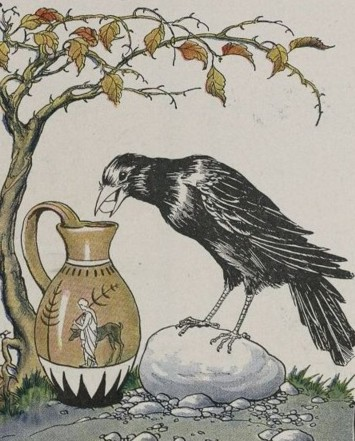

Crow's Call Press takes its name from an old story about a crow that lifted the water in a pitcher, pebble by pebble, until it could finally drink. We see learning in the same way: a creative, deliberate act that raises understanding one idea at a time. Founded by a team of American educators now based in Busan, South Korea, we bring together backgrounds in literature, art, and debate to reimagine what English education can be. Our programs and publications combine storytelling, analysis, and communication, helping students find voice and meaning in what they learn. We believe education is both an art and a craft, shaped by curiosity, empathy, and the willingness to look closer. Every lesson we create begins with a simple call to think, to imagine, and to reach a little higher.

Content Developer & Operations Coordinator
Zoe Yera leads the development of literature-driven curriculum at Crows Call Press, designing programs that push students beyond surface-level reading into deep interpretation and original thought. A graduate of the Savannah College of Art and Design, she brings over six years of experience in education, specializing in literary analysis, thematic writing, and critical thinking. Zoe's approach blends structured rigor with intellectual curiosity, empowering students to uncover layered meaning in every text and connect literature to the evolving world around them. Outside of her work, she draws creative inspiration from immersive storytelling in games like Kingdom Hearts and Final Fantasy XII. She is passionate about building curriculum that transforms how students think.
"Silence creates its own violence." - Jeff VanderMeer, Annihilation
Methodology Architect & Talent Developer
Nico Orsini serves as the Methodology Architect and Talent Developer for Crow's Call Press. He began teaching in 2015 through university ESL programs and writing centers before moving into full-time education after earning his degree in English from Virginia Commonwealth University in 2019. Since then, he has trained teachers in Prague through The Language House TEFL, taught university and private courses across Europe, and developed curriculum frameworks now used in schools throughout Korea. His work focuses on creative writing methodology, game-based learning, and student engagement through narrative design.
"You must not become a mere peddler of words." - Sherwood Anderson, Winesburg, Ohio
Head of Debate Content & Instruction
Mike Hatcher is an educator and debate specialist with more than 15 years of experience, recognized for building some of Busan's most successful debate programs. He has taught every level from kindergarten to university and continues to lead with structure, empathy, and clarity. A certified TEFL instructor through The Language House in Prague, he focuses on critical thinking, communication, and debate systems that help students speak and reason with confidence. Mike coached Busan's first team to place in Korea's national top five and now designs curricula that support both academies and homeschool environments. When not teaching, he enjoys skateboarding, gaming, and time with his two sons.